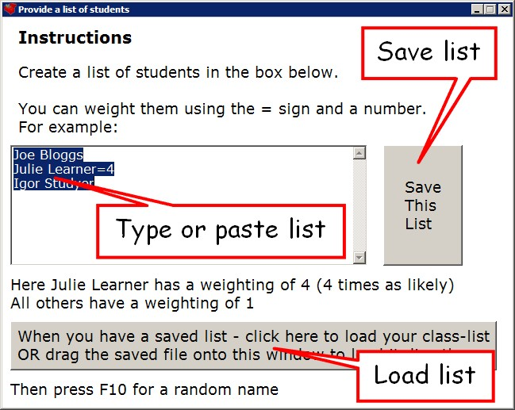
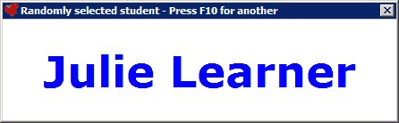
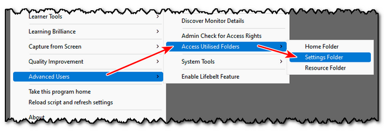
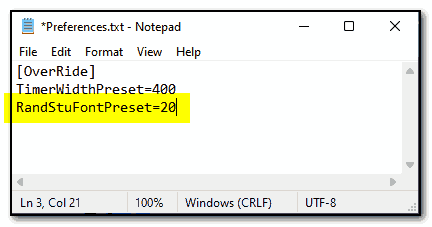

Random Student Selector
(Shortcut Key = F10)
Also part of the On-Screen Toolbar
When you first open it, you are greeted by the following screen:

Type or paste a list of students into the space provided.
NOTE - you can WEIGHT the RANDOMNESS of the selection by using a "=" sign, e.g.:
Joe Bloggs=3
Means Joe Bloggs is 3x more likely to be selected.
You can save this class-list for future use.
Then load in the list of students.
Each time you press F10, a different student will be randomly selected:

You can press F10 anytime throughout the lesson to display a new student.
Clicking the name of the student also selects another.
If you would like to load in a different class-list, select:
RANDOM STUDENT SELECTOR from the main menu.
Or use the shortcut WindowsKey and F10
(ALTERNATIVE SHORTCUT = ScrollLock and F10)
Top tip:
Many teachers asked for a way to load several random lists, so they could have them pre-loaded before each lesson.
Up to 5 list has been loaded, and can be accessed by pressing the keys: F8, F9, F10, F11, F12.
The first time you press any of these keys, the Teacher Toolkit will prompt you to load a list from a text file.
Once a text file has been loaded, a random selection is made each time the key is pressed.
NOTE - To load a different list into these F-key lists, you will need to use the shortcut WindowsKey and F-key
(ALTERNATIVE SHORTCUT = ScrollLock and F-key)
Top tip:
You can over-ride the font size of the Random Student Selector by altering the Preferences file in the settings folder:


Alter the value for RandStuFontPreset to preset the font size you would prefer.
Setting this to zero will return to the default font size.